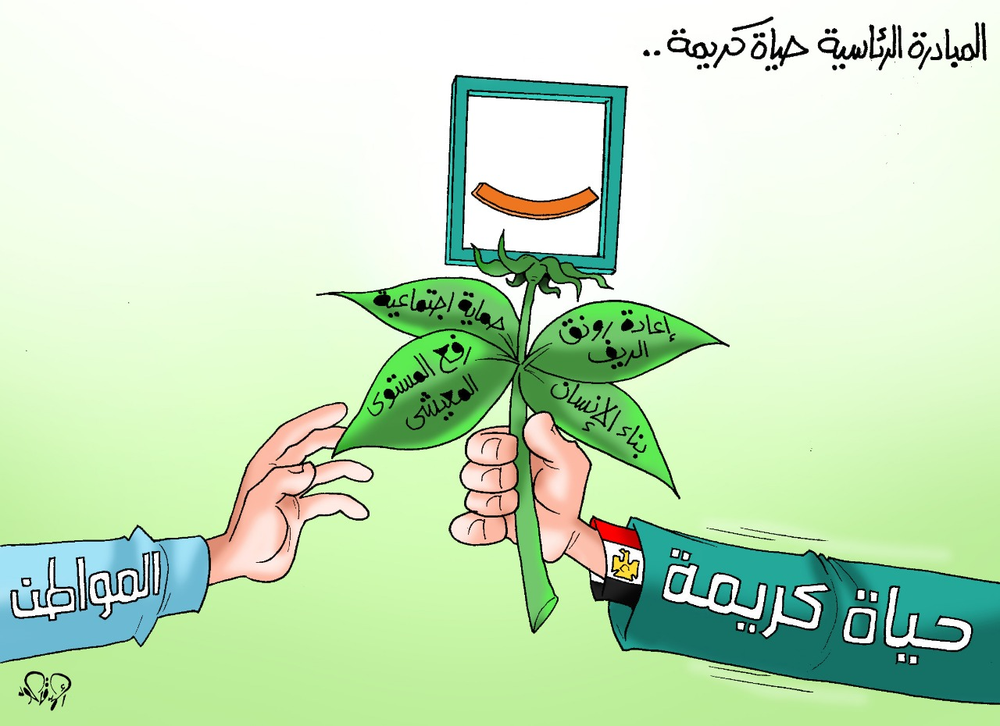

Initiative concept
It is a national initiative launched by President Abdel Fattah El-Sisi, President of the Arab Republic of Egypt on January 2, 2019 to improve the standard of life for the most needy community groups at the state level and also contribute to raising the level of daily services provided to citizens, especially in villages. The most needy and provide a decent life for them to bridge the development gaps between the centers and villages and their dependencies, invest in human development and enhance the value of the Egyptian personality.

Target classes
1- The needy families in rural communities
2- Elderly
3- People of Determination
4- Female breadwinners and divorced women
5- Orphans and Children
6- Youth able to work
Beneficiary of the initiative
20 governorates
175 centers
4584 villages
28000 continued
58,000,000 citizens
The initiative includes:
1- Generous housing: raising the efficiency of homes, building roofs, building residential complexes, and extending water, sewage, gas and electricity connections inside homes.
2- Infrastructure: micro-projects and activating the role of productive cooperatives in villages
3- Medical services: building hospitals and health units, equipping them with equipment and providing them with distinguished medical cadres, in addition to launching medical convoys to provide health services everywhere.
4- Educational services: building and raising the efficiency of schools and nurseries, establishing literacy classes and providing educational staff
5- Economic Empowerment: Training and employment of citizens through medium, small and micro enterprises.
6- Social interventions and human development: targeting the family, children and women, including building and rehabilitating people and marrying orphans, from preparing marital homes to making social joys
7- Environmental interventions: collecting garbage and exploring ways to recycle it...
Basic principles:
1- Transparency in the circulation of information
2- Strengthening social protection for the neediest groups
3- The commitment and commitment of each partner to perform his role in accordance with the work methodology and service standards
4- Supporting decentralization by delegating authority and allowing more flexibility and bringing the distance between
5- Integrity in performing due service
6- Mutual trust between all partners and youth volunteers to work
7- Balance between providing service interventions and development and productivity interventions